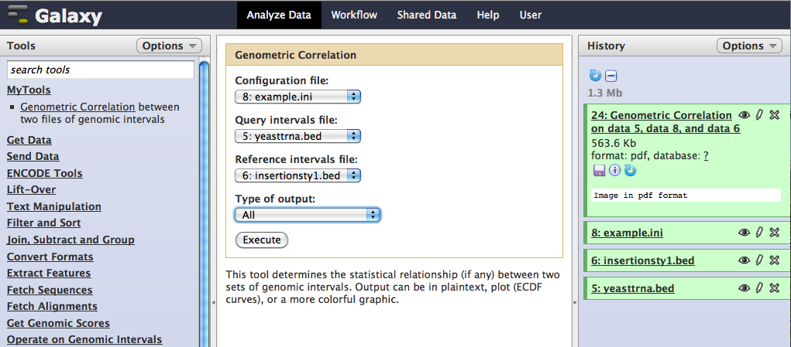

Integrating GenometriCorr with the Galaxy platform
The Galaxy genomic data analysis platform is a useful starting point for those who want to use the functionality of GenometriCorr within a GUI that has many additional data manipulation tools.
To use GenometriCorr within Galaxy, you will first have to install your own Galaxy instance. Follow the helpful instructions provided by the Galaxy team to set up the server.
Now install the plugin. In the main Galaxy directory, add the following lines to the top of the tool_conf.xml file, within the <toolbox> section:
<section name="MyTools" id="mTools">
<tool file="myTools/Start_GenometriCorr.xml" />
</section>
Make a new directory, called myTools, inside the tools directory, and put both the Start_GenometriCorr.R and the Start_GenometriCorr.xml files in there. Go back to the main directory and start Galaxy by calling sh run.sh. If you are a Mac user, you can change the suffix to run.command and the resulting file will execute on a double click.
Load in two .bed files of intervals using the Get Data link. At least some of the chromosomes must be present in both files for comparison to be possible. Also, provide a configuration file for the comparison (example file below). Possible output formats are "ECDF plots," a bare-bones output of statistics and simple curves depicting the strength and direction of the correlations, "Graphic visualization," a more comprehensive view of the relationships between the two intervals, "text output of statistics," which includes no plots, or "both," which includes both graphical formats. All output, even the statistics only output that lacks graphics, is in .pdf format.

Sample files are here:
config file
first (query) .bed file of intervals
second (reference) .bed file with comparison intervals